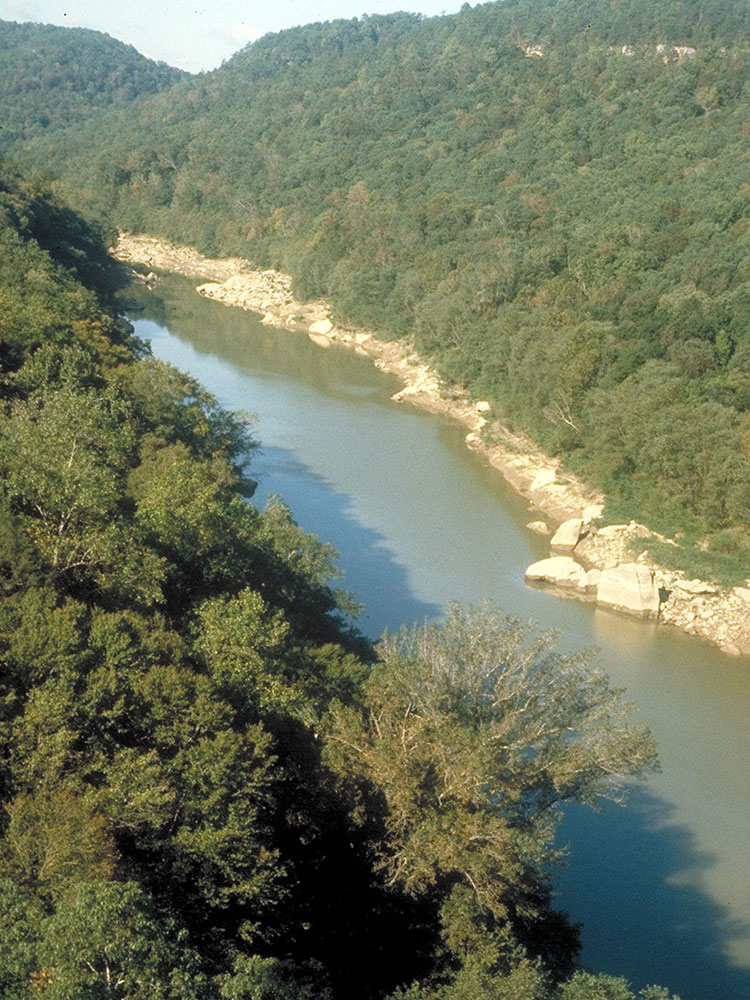
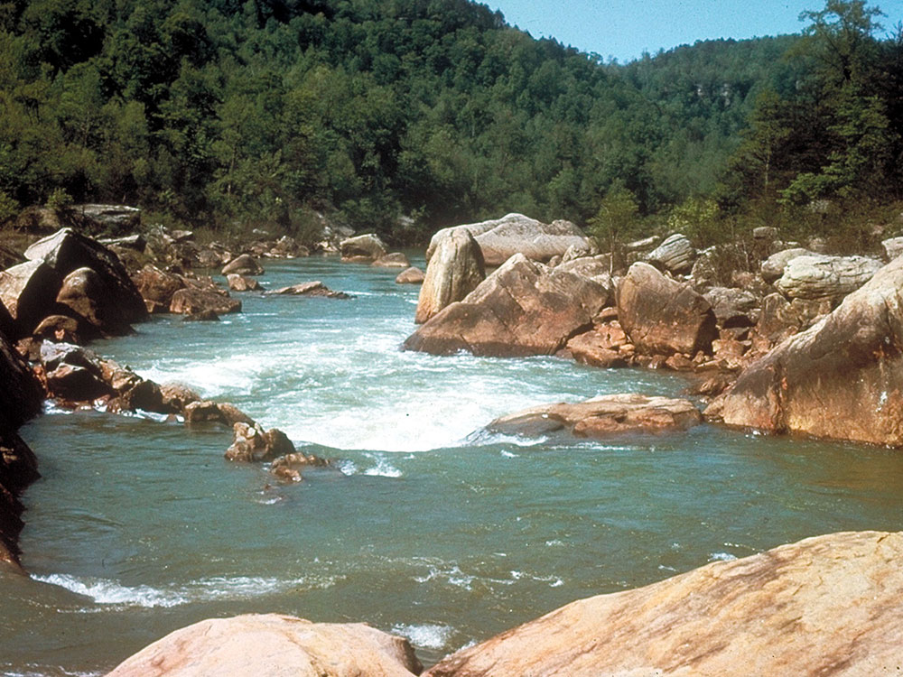
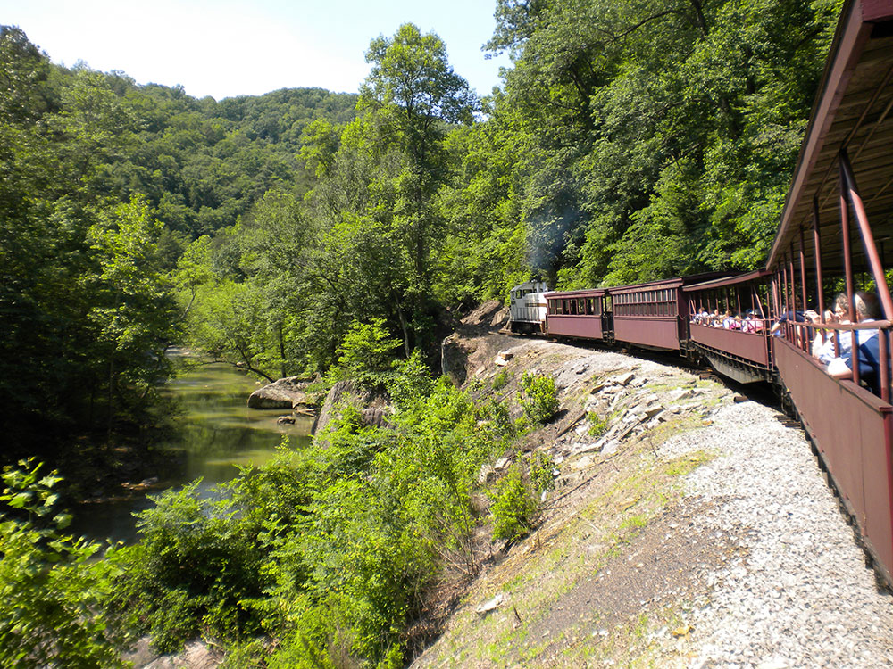
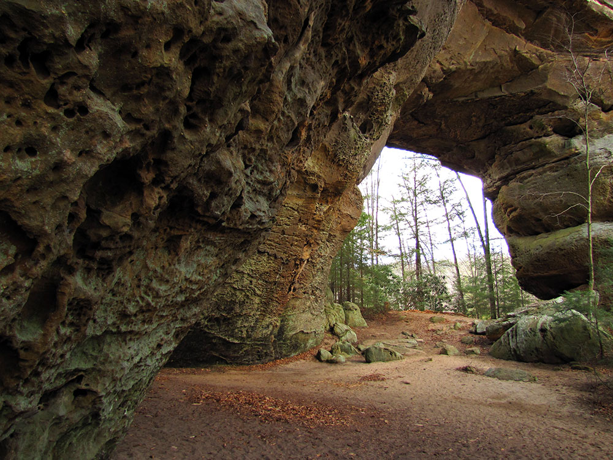
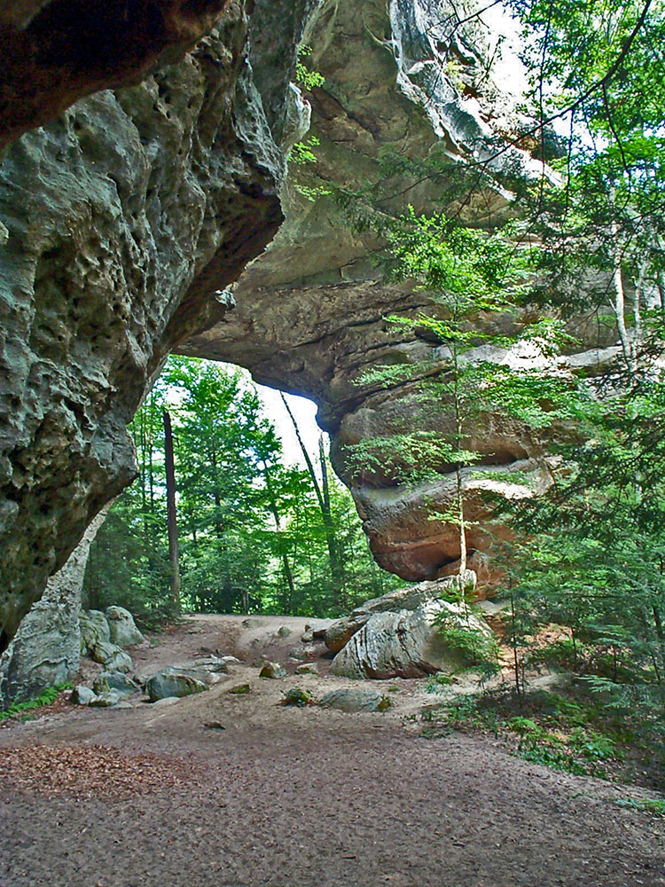

Region contains one of the highest concentrations of natural bridges in the eastern United States
General Information
Visitor center hours vary by location; Bandy Creek Visitor Center is open daily from 9:00am to 5:00pm ET
No admission fee required
Summer: Long daylight hours and river recreation
Fall: Peak foliage and comfortable hiking weather
Winter: Quietest season with excellent views through leaf-off forests
How to Get There
From Oneida, Tennessee (3 mi): Take US-27 S to Leatherwood Road, then follow Leatherwood Road west into Big South Fork National River and Recreation Area headquarters and visitor facilities near Bandy Creek.
Overview
The Big South Fork National River and Recreation Area protects the Big South Fork of the Cumberland River and its tributaries across more than 125,000 acres of the Cumberland Plateau in northeastern Tennessee and southeastern Kentucky. Congress authorized it in 1974 to preserve a free-flowing river gorge and to provide recreation, and it is managed by the National Park Service. The area is known for dramatic sandstone bluffs, deep forested gorges, waterfalls and one of the highest concentrations of natural bridges and arches in the eastern United States. Visitors come to hike, paddle, ride horses and mountain bikes, climb, camp and explore the old coal-mining heritage of the plateau.
Access
The recreation area is a large, rural landscape with several entrances. On the Tennessee side, the Bandy Creek area near Oneida, reached by US-27 and Leatherwood Road, is the main hub for the visitor center, campground and many trailheads. On the Kentucky side, the Blue Heron Mining Community is reached from Stearns and Whitley City on US-27 and KY-742, and Yahoo Falls is near Whitley City. Knoxville is roughly an hour and a half away, and Lexington and Nashville are about two to two and a half hours. Roads inside the park are mostly paved but narrow and winding, and some backcountry roads are gravel, so allow plenty of time between sites and bring supplies.
Seasons
Spring brings flowing waterfalls, wildflowers and the best conditions for paddling, as river levels are highest after rain. Summers are warm and humid, with long days for hiking, swimming, horseback riding and camping, while the river can run low in late summer. Fall is a favorite season, with excellent foliage from mid October into early November and comfortable hiking weather. Winters are cold with occasional snow and ice, and some roads, facilities and seasonal attractions such as Blue Heron reduce hours or close. Hunting is allowed in season in parts of the area, so wear bright colors in fall and winter.
Things to Do
Explore Natural Arches
Some of the park’s most iconic features are its massive sandstone arches. Twin Arches, among the largest natural bridges in the eastern United States, are a must-see. Other notable formations include Needle Arch, Split Bow Arch, and Yahoo Arch, each showcasing the unique geology of the Cumberland Plateau.
Visit Scenic Overlooks
The park contains numerous overlooks that provide panoramic views of the Big South Fork Gorge and surrounding forests. Popular viewpoints include East Rim Overlook, Bear Creek Overlook, and various overlooks along the gorge rim that are especially impressive during fall foliage season.
Take a Scenic Drive
Several roads through the recreation area provide access to overlooks, trailheads, river views, and historic locations. Driving through the park is an excellent way to experience its rugged landscape while stopping at key attractions along the way.
Tour the Blue Heron Mining Community
Blue Heron is a preserved historic coal mining community that uses innovative outdoor exhibits to tell the story of the region’s mining heritage. Visitors can walk among reconstructed structures, explore interpretive displays, and learn about life in a former Appalachian mining town.
Paddle the Big South Fork River
Canoeing, kayaking, and rafting opportunities allow visitors to experience the park from the water. Paddling the river offers a unique perspective of the towering cliffs, rock formations, and remote sections of the gorge.
Discover Waterfalls
The recreation area contains numerous waterfalls that are especially impressive after rainfall. Popular destinations include Yahoo Falls, the tallest waterfall in Kentucky, along with Slave Falls, Angel Falls, and several smaller cascades hidden throughout the gorge system.
Enjoy Rock Climbing and Bouldering
The park's sandstone cliffs provide opportunities for experienced climbers and boulderers. Many climbing areas feature scenic views and challenging routes amid the dramatic gorge landscape.
Explore Historic and Cultural Sites
Beyond Blue Heron, visitors can discover remnants of early settlements, abandoned mining operations, historic farmsteads, and locations connected to the region’s Appalachian heritage.
Top Trails
Twin Arches Upper Loop
Length: 1.2 miles round trip
Elevation Gain: Approximately 200 feet
Difficulty: Easy
The most popular trail in Big South Fork, this short loop leads to Twin Arches, among the largest natural sandstone arches in the eastern United States. Multiple viewing platforms provide impressive perspectives of the formations and the surrounding forest.
Slave Falls & Needle Arch Trail
Length: 3.1 miles round trip
Elevation Gain: Approximately 500 feet
Difficulty: Easy to Moderate
This scenic route combines two of the area's highlights: the impressive Slave Falls waterfall and Needle Arch, a striking sandstone formation. The trail includes some stairs and elevation changes but remains accessible for most hikers.
Angel Falls Trail
Length: 4.0 miles round trip
Elevation Gain: Approximately 300 feet
Difficulty: Easy
Following sections of the Big South Fork River, this trail leads to the remains of a former river rapid and offers excellent views of the gorge and river corridor. It's a good choice for visitors seeking a moderately long hike without significant climbing.
Blue Heron Loop Trail
Length: 6.5 miles loop
Elevation Gain: Approximately 800 feet
Difficulty: Moderate
This trail combines natural scenery with cultural history, passing through forested areas, river overlooks, and the historic Blue Heron Mining Community. It is one of the best options for visitors interested in both landscapes and local heritage.
Yahoo Falls & Yahoo Arch Trail
Length: 2.8 miles round trip
Elevation Gain: Approximately 350 feet
Difficulty: Easy
A favorite hike on the Kentucky side of the park, this trail features Yahoo Falls—the tallest waterfall in Kentucky—and continues to the massive Yahoo Arch. The route offers outstanding geological and scenic variety for a relatively short distance.
Split Bow Arch & Bear Creek Overlook Trail
Length: 1.3 miles round trip
Elevation Gain: Approximately 150 feet
Difficulty: Easy
A short and family-friendly trail leading to Split Bow Arch and an overlook with panoramic views across the gorge. This is one of the best quick hikes in the recreation area.
Honey Creek Loop
Length: 5.7 miles loop
Elevation Gain: Approximately 1,000 feet
Difficulty: Difficult
Widely regarded as the park's premier backcountry-style day hike, Honey Creek Loop traverses rugged terrain featuring rock shelters, creek crossings, boulder fields, cliffs, and narrow passages. Strong navigation skills and proper preparation are recommended.
Grand Gap Loop
Length: 7.0 miles round trip
Elevation Gain: Approximately 900 feet
Difficulty: Moderate
This longer route rewards hikers with expansive gorge views, sandstone bluffs, and several overlooks. It is ideal for those looking to experience a larger section of the park's diverse terrain.
Visitor Centers
The Bandy Creek Visitor Center near Oneida, Tennessee, is the main information point, with exhibits, maps, a bookstore and rangers who can advise on trails, river conditions and camping. On the Kentucky side, the Blue Heron Mining Community offers exhibits and interpretation of the area's coal mining history, and additional visitor and information facilities are found in other parts of the recreation area. Hours vary by location and season, so check the National Park Service website before you go.
Camping and Lodging
Lodging and camping are available in and around the recreation area. Bandy Creek Campground in Tennessee and Blue Heron Campground in Kentucky offer developed sites, and other campgrounds, horse camps and backcountry sites are scattered through the area. The wilderness Charit Creek Lodge offers rustic lodging reached only by trail. Pickett State Park nearby has cabins and a campground. Motels and cabins are found in Oneida, Jamestown and Huntsville in Tennessee and in Stearns and Whitley City in Kentucky, while Crossville, Corbin, Somerset and Knoxville are within about one to two hours.
The Big South Fork's most prominent feature is the river gorge cutting through the softer Mississippian age rock beneath the hard Pennsylvanian capstone of the Cumberland Plateau. Water is the most influential agent of geologic change in the Big South Fork region. Over time water action has left many unique and amazing geologic features ranging from the river gorge with its magnificent bluffs to the natural arches and unusual hoodoos.
Hoodoos are a rare but intriguing feature occurring in the Big South Fork. These hoodoos form in a similar manner to those found in the western United States. Where tough capstone still exists on the side of a hill for instance, it prevents the erosion of the softer material below. The result is a naturally formed erect columnar rock where once was located a hill.
This article uses material from the Wikipedia article "Big South Fork National River and Recreation Area", and "Cummins Falls", which is released under the Creative Commons Attribution-Share-Alike License 3.0.









.jpg){kind=link}